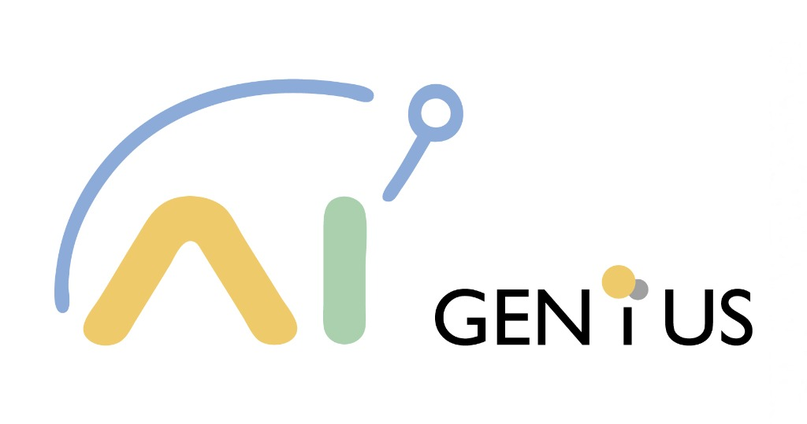

GENIUS教室工具箱
專為幼兒園電子白板設計・所有名單、轉盤主題與集點紀錄自動儲存！
班級名單設定
出席 20 / 20 人・點我設定名單
🎡 轉盤主題與選項
6 項
主題名稱
每次抽出：
🎁
準備好抽幸運小朋友了嗎？
按下「開始抽籤」揭曉幸運座號！
📋 座號總覽
剩餘 20 人
可抽
已抽中
請假/略過
收玩具
🐰
00:00
請先於右側設定時間
⏰ 常用活動與自訂時間
步驟 1：選擇活動名稱（可新增或修改）
步驟 2：老師自行設定時間
分
:
秒
時間到提示音
🌿
輕聲細語・好棒喔！
現在的聲音就像微風一樣溫柔，大家都能專心聽故事～
🚦 教室好聲音控制
🌿 溫柔微風
動態音量波形
平穩柔和波動中
點選切換教室音量模式
0 / 20 ⭐
全班一起收集閃亮亮的星星吧！